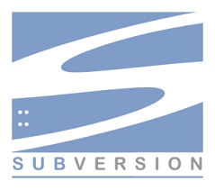
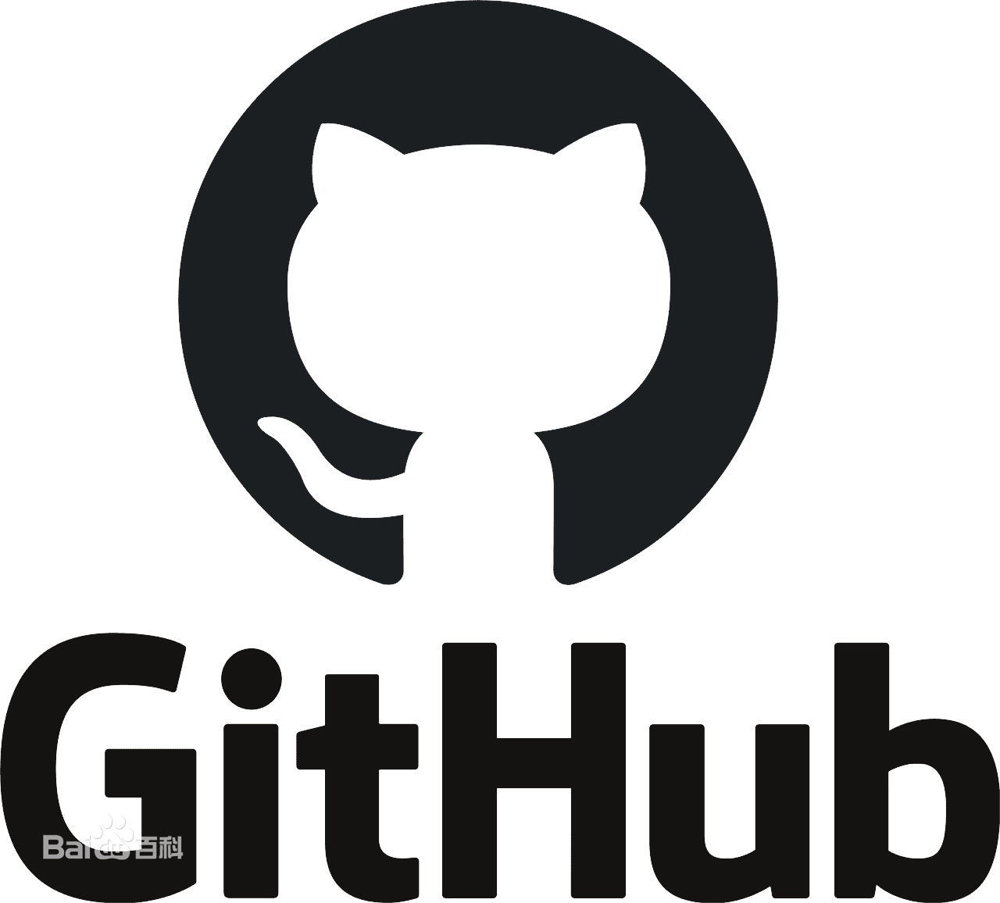

概述
在软件开发过程，每天都会产生新的代码，代码合并的过程中可能会出现如下问题：
- 代码被覆盖或丢失
- 代码写的不理想希望还原之前的版本
- 希望知道与之前版本的差别
- 是谁修改了代码以及为什么修改
- 发版时希望分成不同的版本(测试版、发行版等)
因此，我们希望有一种机制，能够帮助我们：
- 可以随时回滚到之前的版本
- 协同开发时不会覆盖别人的代码
- 留下修改记录，以便随时查看
- 发版时可以方便的管理不同的版本
什么是版本控制系统
一个标准的版本控制系统 Version Control System (VCS)，通常需要有以下功能：
- 能够创建 Repository (仓库)，用来保存代码
- 协同开发时方便将代码分发给团队成员
- 记录每次修改代码的内容、时间、原因等信息
- 能够创建 Branch (分支)，可以根据不同的场景进行开发
- 能够创建 Tag (标签)，建立项目里程碑
什么是Svn

Subversion(SVN) 是一个开源的版本控制系統, 也就是说 Subversion 管理着随时间改变的数据。 这些数据放置在一个中央资料档案库(repository) 中。 这个档案库很像一个普通的文件服务器, 不过它会记住每一次文件的变动。 这样你就可以把档案恢复到旧的版本, 或是浏览文件的变动历史。
日常开发过程其实就是这样的（假设你已经Checkout并且已经工作了几天）：
- Update(获得最新的代码) -->
- 作出自己的修改并调试成功 -->
- Commit(大家就可以看到你的修改了)
如果两个程序员同时修改了同一个文件呢, SVN 可以合并这两个程序员的改动，实际上SVN管理源代码是以行为单位的，就是说两个程序员只要不是修改了同一行程序，SVN都会自动合并两种修改。如果是同一行，SVN 会提示文件 Conflict, 冲突，需要手动确认。
什么是Git
git是一个版本管理软件，由linux之父花了三天搞出来的东西，他没有界面，只支持命令行。
- Git 是一个开源的分布式版本控制系统，用于敏捷高效地处理任何或小或大的项目。
- Git 是 Linus Torvalds 为了帮助管理 Linux 内核开发而开发的一个开放源码的版本控制软件。
- Git 与常用的版本控制工具 CVS, Subversion 等不同，它采用了分布式版本库的方式，不必服务器端软件支持。
版本控制系统的发展史
版本控制系统发展至今有几种不同的模式：
Local VCS
本地使用 复制/粘贴 的方式进行管理，缺点是无法协同开发
Centralized VCS (Lock，悲观锁)
中央集中式版本控制系统团队共用仓库，当某人需要编辑文件时，进行锁定，以免其他人同时编辑时造成冲突。缺点是虽然避免了冲突，但不是很方便。其他人需要排队才能编辑文件，如果有人编辑了很久或是忘记解锁就会造成其他人长时间等待的情况。
Centralized VCS (Merge，乐观锁)
中央集中式版本控制系统团队共用仓库，不采用悲观锁方式来避免冲突，而是事后发现如果别人也修改相同文件(冲突)，再进行手动修改解决。有很多 VCS 属于这种类型，如：CVS，Subversion，Perforce 等
中央集中式版本控制系统的共同问题是，做任何操作都需要和服务器同步，如果服务器宕机则会造成无法继续工作的窘迫。
Distributed VCS
分布式版本控制系统，本地也拥有完整的代码仓库，就不会出现上述集中式管理的问题，即使没有网络，依然可以 commit 和看 log，也无需担心服务器同步问题。如：Git，Mercurial，Bazaar 等就属于分布式版本控制系统。缺点是功能比较复杂，上手需要一定的学习时间。
GitHub

github是一个网站，因为git没有图形界面，github它支持在线的几乎所有git的操作，最重要它也是一个包含了很多程序员的开源社区。
GitLab
gitlib 是用于实现git功能的开发库
gitlab提倡开源，如果你不想开源就要花钱，你如果不愿意花钱，就自己搞个服务器，装gitlab这个软件来实现自己的版本控制，有点私服的概念。
Gitee
Gitee是开源中国（OSChina）推出的基于Git的代码托管服务
Gitee包括三个版本，分别是：社区版、企业版和高校版
本教程来自千锋教育-李卫民
本文由 Sajor
创作，采用 知识共享署名4.0 国际许可协议进行许可
本站文章除注明转载/出处外，均为本站原创或翻译，转载前请务必署名
最后编辑时间为: 2021-07-04T00:31:03+08:00